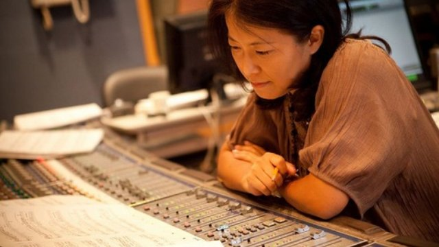
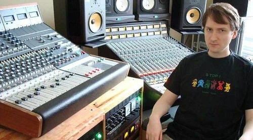

Великие композиторы игровой музыки
Джереми Соул
Известные работы: The Elder Scrolls (Morrowind, Oblivion, Skyrim), Guild Wars, Total Annihilation.
Мастер эпических симфонических полотен.
Нобуо Уэмацу
Известные работы: Серия Final Fantasy, Chrono Trigger, Lost Odyssey.
Один из самых влиятельных композиторов в истории игр.
Кодзи Кондо
Известные работы: Super Mario Bros., The Legend of Zelda.
Создатель мелодий, знакомых каждому геймеру.

Ёко Симомура
Известные работы: Kingdom Hearts, Street Fighter II, Final Fantasy XV.
От аркадных хитов до глубоких оркестровых сюит.
Мартин О'Доннелл
Известные работы: Halo, Destiny.
Грегорианские хоралы и научно-фантастический эпос.
Сэм Хьюлик
Известные работы: Mass Effect
Мрачный эмбиент и электронный рок.
Келли Бэйли
Известные работы: Half-Life
Его музыкальный стиль характеризуется как индустриальная электроника, индастриал-техно, амбиент и саундтреки с мрачной, атмосферной окраской.

Майкл Хантер
Известные работы: GTA: San Andreas, GTA IV
Известен своим уникальным стилем, смешивающим электронную музыку с этническими мотивами и фанком.